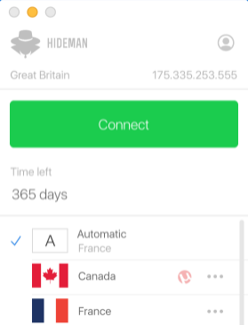

Experience.
Здравствуйте на этой странице хочу более широко рассказать о своем опыте. С компьютером я познакомился ещё в школе это был zx-spectrum с кучей игр и встроенным интерпретатором basic. Уже тогда я писал небольшие программы по типу калькулятора и ввода пароля, к сожалению на тот момент из документации по basic у меня был всего одна книжка и не все примеры работали.
Далее у меня появился компьютер 80286 на 16-битовой платформе х86, на нем в теже школьные годы я научился программировать на Turbo Assembler. Тут было больше документации и примеров, т.к x86 платформа активно развивалась. Пробывал писать псевдографические игры, резиденты, программы для работы с диском.
Чуть пойзже уже на 32х битовой платформе i386, я научился писать программы под Windows, работать с сетью, с windows gui и многое другое. Программировал на assembler и под linux, нередко приходилось собирать исходники на C++.
Во времена колледжа, когда стал более менее доступен интернет, появился интерес к сайтам, как они устроенны и работают, тогда я стал изучать технологи php, js попутно проявляя интерес к linux и bsd операционным системам, было интересно собрать какойнибудь gentoo или установить freebsd или openbsd.
С распространением локальных сетей, стали появляться сайты с видеоплеерами на технологии flash(actionscript) и тогда разбираясь как оно работает я написал свой видеоплеер, исходники которого вы можете посмотреть на моем github.
Когда у меня появился телефон с java интерпретатором внутри, с ним же появилась идея разработать свой irc(Internet Relay Chat) клиент, с поддержкой цветов распространненого десктопного клиента mIRC и другими полезностями. Код вы можете посмотреть у меня на гихаб.
Первая работа в компании Dinix, в качестве тестового задания попросили написать простой блог на php,с чем я справился. В компании занимались разработкой сайтов на самописном php движке dcms движок yii тогда только появлялся, также и прикручивали jquery т.к разделение на фронтендеров у нас небыло, вносили мелкие правки css. Однажды пришлось разработать слайдер превьюшек для галлереи с плавным замедлением прокрутки как на телефонах, писал его на vanilla js без jquery.
Второй задачей было скопировать сайт whoer.net(сайт показывает много информации о вашем браузере и айпи). Также нужно было прикрутить p0f (passive os fingerprint) как сервис где как раз понадобились навыки работы и компиляции под linux. Третьей интересной задачей было переквалифицирование в objective-c разработчика под MacOS, нужно было разработать графический десктопный клиент для openvpn.

Второе место работы Magnitka.ru местный интернет провайдер. Тут я подчерпнул много разнообразного опыту, такого как настройка L2-L3 сетевого оборудования, коммутаторы, роутеры, брасы. Прояснил своё понимание как устроены сети. Занимался администрированием сайта на bitrix, добавлял/убирал информацию.
За время работы в компании разработал инструментарий storm, который решал задачи поиска порта абонента по маку, подписывание порта абонента на договоре в биллинге, привязку коммутатров к yandex карте, резервирование конфигураций оборудования, построение динамической карты коммутаторв с минимальным участием человека.
Для работы фреймворка был выбран протокол telnet, одной из причин такого выбора могу привести то что некоторые коммутаторы не могут отдать маки для vlan по snmp, либо отдают не корректно. Одной из идей было реализовать функционал устройств в виде класса и использовать наследование ООП с переопределение отдельных специфичных методов.
Таким образом такой подход давал очень быстро добавить в систему похожие но ребрендированные устройства, другими словами похожие по cli коммутаторы. Весь инструментарий писался на ruby, использовались: d3.js, jquery, bootstrap, websockets, knockout, sqlite, webrick. Ссылка на проект https://github.com/mymywork/storm
На третьем месте работы я занимался только фронтенд разработкой это был проект системы заявок на банковские гарантии. При разрабокие использовался react, redux, saga, lodash, reselect, normalizr, yup, formik, webpack. При работе в этой комманде приобрел большой опыт по работе с react-redux окружением, и валидацией форм на yup и formik. Могу отметить что также были небольшие задачи на nodejs для бэкэнд.
Далее были небольшие работы
- Нужно было сделать живой поиск на сайт продажи аккумуляторов http://car-battery.moscow.
- Диаграм-блоки с соединениями на фремворке JointJS https://github.com/mymywork/diagram
- Простой crud на react по просьбе товарища https://github.com/mymywork/react-crud-tables